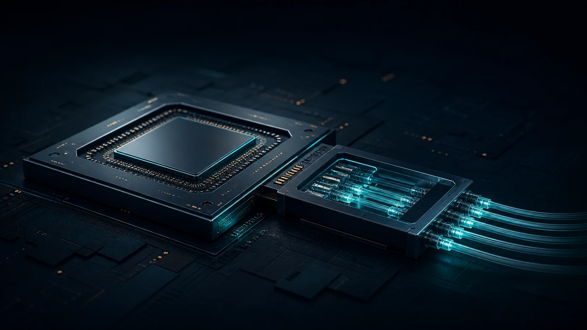
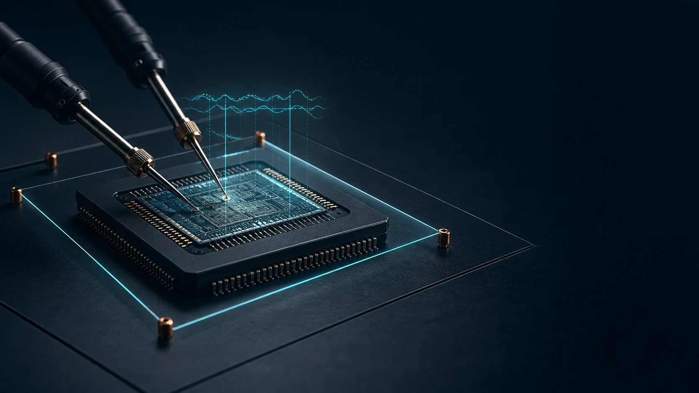

標準或 supplied PDF 明確要求的行為。Behavior explicitly required by a standard or supplied paper.

概念系統圖 · 非實體拓撲 ILLUSTRATIVE SYSTEM MAP · NOT PHYSICAL TOPOLOGY
RESEARCH NOTE 04 · AI SYSTEMS / PERSISTENT STATE
NVM 不必
遍布 AI 系統
NVM does not belong
everywhere in AI systems
真正的機會，是讓每一個系統邊界保存正確的狀態。 The opportunity is to preserve the right state at each system boundary.
從 XPU identity、HBM repair、CPO calibration 到 firmware 與 RAS evidence，本章先說明來源明確要求或展示的行為，再把 OTP、MTP、managed NVM 或 external storage 標為有界的架構候選。 From XPU identity and HBM repair to CPO calibration, firmware and RAS evidence, this chapter establishes what each source explicitly requires or demonstrates—then labels OTP, MTP, managed-NVM or external-storage choices as bounded architecture candidates.
4 DOMAINS
XPU 信任、HBM/PMIC 修復、光模組校準與主機遙測嚴格分界Strict boundary across XPU trust, HBM/PMIC repair, CPO & telemetry
294 PAGES
OCP、JEDEC DDR5 與 HBS 規格一級文獻嚴格對照驗證Grounded against 294 pages of OCP, JEDEC DDR5 & HBS primary specs
N5 → N2 GAA
純邏輯製程相容，Core-supply Direct Read 降壓解耦Pure logic compatible; Direct core-supply read into FinFET / GAA
ZERO AMBIGUITY
根信任與遙測日誌分離，杜絕將有限次寫入誤植為無限串流Decouple immutable RoT from bounded telemetry; no false mandates
SOURCE CORRECTION · OCP-LISTED LIGHTMATTER CONTRIBUTION · NOT AN ADOPTED OCP SPECIFICATION
本次審閱的 OCP 文件未要求 OTP／MTP MemoryThis OCP Paper Does Not Require OTP or MTP Memory
OCP Server Project 公開列出這份 Lightmatter contribution；它不是已採納的 OCP specification。文件中的兩處 MTP 都是 MPO／MTP 光纖接頭，不能用來證明 NVM。另行引用的 JEDEC DDR5 與 OCP Hardware Secure Boot 標準，才分別建立 PMIC MTP、SPD Hub 可重寫 NVM 與 BMC 不可變安全狀態。其餘配置仍須逐項驗證。The OCP Server Project publicly lists this Lightmatter contribution; it is not an adopted OCP specification. Its two MTP occurrences mean MPO/MTP optical connectors and are not NVM evidence. Separate JEDEC DDR5 and OCP Hardware Secure Boot standards establish PMIC MTP, SPD Hub rewritable NVM and immutable BMC security state. Other placements remain subject to validation.
01 · EXECUTIVE THESIS
State Contract 優先
Memory Selection 在後State Contract First
Memory Selection Second
同一套 AI platform 同時存在不可變信任、有限次更新、即時控制與大量 operational evidence。把它們都塞進 OTP 或都寫進 MTP，會同時造成安全、endurance 與系統責任錯配。One AI platform contains immutable trust, bounded updates, live control and high-volume operational evidence. Putting everything in OTP—or writing everything into MTP—misaligns security, endurance and ownership.
具名產品或官方實作展示此 lifecycle 已存在。A named product or official implementation demonstrates that the lifecycle exists.
同儕審查實作或獨立實體分析支持機制。Peer-reviewed implementation or independent physical analysis supports the mechanism.
公開 IP envelope；不是 independent assurance。A public IP envelope—not independent assurance.
由系統需求推導的 NVM placement。An NVM placement inferred from a system need.
節點、PVT、攻擊或 update workload 尚未封閉。Node, PVT, attack or update workload remains open.
02 · SYSTEM PRESSURE
AI 擴大 State Diversity
不只是增加 NVM 容量AI Expands State Diversity
Not Merely NVM Capacity
每一條 state lane 都有不同的 mutability、update cadence、temperature、atomicity 與 evidence 需求。這些條件才是 IP opportunity 的入口。Each state lane has a different mutability, update cadence, temperature, atomicity and evidence requirement. Those conditions—not a generic bit count—define the IP opportunity.
01IMMUTABLE TRUST
身分、root、fail-safe baselineIdentity, roots, fail-safe baseline
少量、低寫入、不可回退。候選：OTP 或 PUF-derived root；證書與 helper data 另行定義。Small, rarely written and non-reversible. Candidates: OTP or a PUF-derived root; certificates and helper data require separate treatment.
OTP / PUF ROOT02BOUNDED LIFECYCLE
repair、anti-rollback、field profileRepair, anti-rollback, field profiles
有限次更新，必須具備 authenticated transition、atomic commit 與 recovery。Bounded updates require authenticated transitions, atomic commit and recovery.
MANAGED NVM03LIVE ADAPTATION
equalization、thermal loop、timing servoEqualization, thermal loops, timing servo
runtime training 通常留在 SRAM／register；只有 cold-start seed 或 qualified snapshot 才形成 NVM 機會。Runtime training normally stays in SRAM/registers. Only a cold-start seed or qualified snapshot creates an NVM opportunity.
VOLATILE STATE04OPERATIONAL EVIDENCE
CPER、telemetry、fleet historyCPER, telemetry, fleet history
高頻資料先 aggregate、reduce、forward；embedded MTP 只適合 workload 已被界定的 fault capsule。High-rate data should be aggregated, reduced and forwarded. Embedded MTP fits only a fault capsule with a bounded workload.
HOST / BMC / EXTERNALPERSISTENT-STATE SUBSTRATE
狀態邊界優先元件相鄰不等於架構State Boundaries FirstComponent Adjacency Is Not Architecture
一個 AI platform，多個邏輯 state domain；持久化必須由可驗證的 contract 管理，而不是每個 IP 的預設配置。One AI platform, multiple logical state domains. Persistence must be governed by a verifiable contract—not assumed in every IP.
PACKAGE ARTWORK IS ILLUSTRATIVE
ILLUSTRATIVE PACKAGE · NOT TOPOLOGY
00 AI PACKAGE
XPU
SECURITY ISLAND
ROOT · POLICY
HBM REPAIR DOMAINCONTRACTXPU SECURITY ISLAND
REPAIR METADATA ≠ VOLATILE PAYLOAD
Repair metadata 可持久；HBM payload 與 SRAM runtime state 保持 volatile，BISR 與 repair authority 仍依產品而定。Repair metadata may persist. HBM payload and SRAM runtime state stay volatile; BISR and repair authority are product-specific.
SERDES BOUNDARYDATAOE CTRL + PIC
LIVE EQ · VOLATILE
Live EQ 保持 volatile；只有 recovery time 證明需要時，cold-start seed 才是合理 inference。Live EQ stays volatile. Persist a cold-start seed only when recovery time justifies the inference.
ELS / LASER CTRLLIGHTPIC
LIGHT SOURCE · NOT DATA PATH
ELS 提供 optical power，不承載 data；只有 controller ownership 被證明時才保存 local state。ELS supplies optical power, not data. Persist local state only when controller ownership is proven.
POWER & SAFETY · PMIC∥PLATFORM MGMT · DC-SCM / BMC
SEPARATE AUTHORITY PLANES
PMIC 處理 power/reset；BMC secure boot 需要 OTP-class 不可變狀態，並可協調 authenticated firmware、RAS 與 evidence。root 位於 BMC die 或 companion HWRoT，仍依產品架構而定。PMIC handles power/reset. BMC secure boot requires OTP-class immutable state and may orchestrate authenticated firmware, RAS and evidence. Whether the root resides on the BMC die or a companion HWRoT remains product-specific.
邏輯 persistence-contract view：XPU security island、HBM repair domain、SerDes boundary、optical engine、laser controller、PMIC 與 platform management 參與不同的 persistence contract；authoritative owner 仍須依產品架構確認。Package artwork 僅為視覺說明，不代表實體位置或協定拓撲。Logical persistence-contract view: the XPU security island, HBM repair domain, SerDes boundary, optical engine, laser controller, PMIC and platform management participate in distinct persistence contracts; the authoritative owner remains product-specific. The package artwork is illustrative and does not represent physical placement or protocol topology.
圖解邊界：Diagram boundary: 上方 package artwork 僅為視覺說明；下方 contract view 呈現 state boundary 與 validation responsibility，不是 OCP spec、實體 floorplan 或 local NVM mandate。The package artwork is illustrative. The contract view shows state boundaries and validation responsibility—not an OCP specification, physical floorplan or local-NVM mandate.
03 · OPPORTUNITY MAP
Evidence 定義系統行為
Inference 定位 NVM 價值Evidence Defines System Behavior
Inference Locates NVM Value
先用來源支持模式查看 requirement、official case、technical evidence 與 disclosure，再開啟有界推論。每張卡分開呈現 evidence、candidate fit、validation gate 與 limit。Start with the source-grounded view for requirements, official cases, technical evidence and disclosures, then include bounded inferences. Every card separates evidence, candidate fit, validation gate and limitation.
07目前顯示的機會卡VISIBLE OPPORTUNITY CARDS
01XPU / ROOT OF TRUST
OFFICIAL PRODUCT CASE
H100 On-Die Trust 與 AttestationH100 On-Die Trust and Attestation
NVIDIA H100 公開架構包含 on-die RoT、secure／measured boot、SPDM 與 attestation。它建立 persistent identity 的產品需求，不代表任何單一 OTP／PUF 實作必然較安全。NVIDIA's public H100 architecture includes an on-die RoT, secure/measured boot, SPDM and attestation. It establishes a product need for persistent identity—not that one OTP or PUF implementation is universally safer.
STATE / FITIDENTITY ANCHOROTP or PUF-derived root需確認 provisioning 與 physical threat modelProvisioning and physical threat model remain target-specific
02FIRMWARE LIFECYCLE
INFERRED OPPORTUNITY
Immutable Root 與 Mutable Rollback StateImmutable Root and Mutable Rollback State
OCP 要求 signed update、version reporting 與 rollback behavior；SPDM 定義 device-constant identity，但把 provisioning mechanism 留在規格之外。最佳 fit 不是把整個 image 放進 OTP。OCP calls for signed updates, version reporting and rollback behavior. SPDM defines device-constant identity but leaves provisioning out of scope. The best fit is not to place the entire image in OTP.
STATE / FITROOT + COUNTER + IMAGEOTP/PUF + managed NVM + flashcounter 需 authenticated、atomic、recoverableCounters must be authenticated, atomic and recoverable
03HBM / SRAM REPAIR
OFFICIAL PRODUCT CASE
Repair State 的可靠度與 Attestation 證據Repair State as Reliability and Attestation Evidence
NVIDIA row remap 可在 device life 持續生效；Hopper channel repair 會改變 attestation measurement。Siemens 也顯示 fusebox programming session 可能非常有限。NVIDIA row remapping persists for device life, while Hopper channel repair can change attestation measurements. Siemens also shows that fusebox programming sessions may be very limited.
STATE / FITREPAIR MAPFuse / managed sparse state合法修復必須與 measurement／RIM 同步Authorized repair must stay coherent with measurements/RIMs
04PHOTONICS / CPO
INFERRED OPPORTUNITY
Factory Baseline 與 Live Thermal ControlFactory Baseline and Live Thermal Control
OCP 指出 ring wavelength 對溫度敏感；CMIS 支援 diagnostics 與 statistics。這支持 per-unit trim／safe limit 的持久化機會，但 continuous tuning 應留在 volatile control。OCP identifies temperature-sensitive ring wavelength; CMIS supports diagnostics and statistics. That supports persistent per-unit trim and safe limits, while continuous tuning should remain volatile.
STATE / FITBASELINE + RUNTIME LOOPOTP baseline + optional MTP profileContinuous tuning ≠ continuous NVM writesContinuous tuning ≠ continuous NVM writes
05PMIC STARTUP TRUTH
OFFICIAL PRODUCT CASE
PF8100／PF8200 的 OTP Boot BaselinePF8100/PF8200 OTP Boot Baseline
NXP PF8100／PF8200 每次 VIN crossing 從 OTP 載入 mirror registers，再載入 functional registers。這展示 immutable startup configuration 的實際產品價值。NXP PF8100/PF8200 loads mirror registers from OTP at a VIN crossing, then loads functional registers. It demonstrates the real product value of immutable startup configuration.
STATE / FITSAFE BOOT CONFIGOTP器件案例；不可直接外推所有 AI PMICDevice-specific; not universal to every AI PMIC
06FAULT CAPSULE
OFFICIAL PRODUCT CASE
ADP1055 的有界 Black-Box LoggingADP1055 Bounded Black-Box Logging
ADI ADP1055 以 EEPROM 保存 fault snapshot，並公開 temperature-dependent record limit、circular buffer 與 hold-up capacitor 條件。這是 bounded logging 的設計範本。ADI ADP1055 stores fault snapshots in EEPROM and discloses temperature-dependent record limits, a circular buffer and hold-up-capacitor condition. It is a design pattern for bounded logging.
STATE / FITEVENT-DRIVEN RECORDManaged EEPROM / MTP先定義 Tj、event rate、atomic write 與 retentionDefine Tj, event rate, atomic write and retention first
07RAS / TELEMETRY
INFERRED OPPORTUNITY
Telemetry Stream 的分層儲存Tiered Storage for Telemetry Streams
OCP RAS API 與 supplied PDF 要求 discovery、configuration、event／action queues 與跨域 diagnostics；local NVM 只應保留 threshold、checkpoint 或 last-gasp capsule。The OCP RAS API and supplied paper call for discovery, configuration, event/action queues and cross-domain diagnostics. Local NVM should retain only thresholds, checkpoints or a last-gasp capsule.
STATE / FITREDUCE BEFORE STORESRAM buffer → BMC / host storageraw stream 優先 forward，不持續磨耗 embedded NVMForward the raw stream; do not continuously wear embedded NVM
08CHIPLET LIFECYCLE
INFERRED OPPORTUNITY
Per-Die Lifecycle State 與 Package-Level TrustPer-Die Lifecycle State and Package-Level Trust
UCIe 2.0 擴充 manageability 與 DFx lifecycle。這支持 per-die identity、repair ownership、debug lock 與 firmware metadata 的機會，但 UCIe 的 MTP 是 Management Transport Protocol。UCIe 2.0 expands manageability and DFx lifecycle. That supports opportunities for per-die identity, repair ownership, debug locks and firmware metadata—but UCIe's MTP means Management Transport Protocol.
STATE / FITPER-DIE OWNERSHIPOTP identity + managed lifecycle state先定義 die、package 與 platform 的權責Define die, package and platform ownership first
09CXL MEMORY DEVICE
INFERRED OPPORTUNITY
Online Firmware 與 PPR 的 Lifecycle ContractOnline Firmware and PPR Lifecycle Contract
CXL 3.2 公開功能包含 online firmware activation、post-package repair、monitoring 與 security。規格證明行為；memory medium、banking、atomicity 與 recovery 仍由產品架構決定。CXL 3.2 publicly includes online firmware activation, post-package repair, monitoring and security. The specification proves the behavior; memory medium, banking, atomicity and recovery remain product-architecture decisions.
STATE / FITFW + REPAIR METADATAManaged NVM + external image storeCXL 未指定 OTP／MTP technologyCXL does not prescribe OTP/MTP technology
10DDR5 PMIC
DIRECT REQUIREMENT
JEDEC 明確定義 PMIC MTP NVMJEDEC Explicitly Defines PMIC MTP NVM
JESD301-2 將 multiple-time-programmable NVM 納入 DDR5 PMIC 的持久設定與狀態契約。應用位置已由標準建立，不再是「等待產品證明」的假設。JESD301-2 places multiple-time-programmable NVM inside the DDR5 PMIC persistent-configuration and status contract. The application socket is standards-defined—not a hypothesis awaiting product proof.
STATE / FITPOWER CONFIG + STATUSMTP / managed NVMmacro、PVT、endurance 與 recovery 仍須 qualificationMacro, PVT, endurance and recovery still require qualification
11DDR5 SPD HUB
DIRECT REQUIREMENT
8-Kbit 可重寫 NVM 是 SPD Hub 標準功能8-Kbit Rewritable NVM Is a Standard SPD Hub Function
JESD300-5B.01 定義 1024-byte、16-block 的 SPD EEPROM／可重寫 NVM 功能。Embedded MTP 是有界的實作候選，不是 JEDEC 指定的 bitcell 技術。JESD300-5B.01 defines a 1024-byte, sixteen-block SPD EEPROM/rewritable-NVM function. Embedded MTP is a bounded implementation candidate, not a JEDEC-prescribed bitcell technology.
STATE / FITMODULE ID + CONFIGEEPROM FUNCTION → MTP CANDIDATEwrite protection、cycles 與 PVT 依實作驗證Qualify write protection, cycles and PVT per implementation
12BMC SECURITY ROOT
REQUIREMENT · VENDOR DISCLOSURE · CANDIDATE FIT
BMC Security State：Requirement、Disclosure 與 Architecture FitBMC Security State: Requirement, Disclosure and Architecture Fit
OCP 規格要求 BMC 使用 hardware-immutable source of verification，但未指定 OTP、PUF 或實體位置。Axiado SCM3003 product brief 另行公開 on-chip OTP roots、三個 4-Kbyte OTP 與 on-chip PUF；這是 vendor disclosure，不是 shipment、deployment 或 attack certification 證據。OCP requires a hardware-immutable source of verification for BMC secure boot but does not prescribe OTP, PUF or physical placement. The Axiado SCM3003 product brief separately discloses on-chip OTP roots, three 4-Kbyte OTPs and an on-chip PUF; that is vendor disclosure, not shipment, deployment or attack-certification evidence.
STATE / FITROOT + POLICY + REVOCATIONOTP + optional PUF-derived rootplacement 與 physical assurance 仍依產品而定Placement and physical assurance remain product-specific
目前篩選條件沒有相符紀錄。No records match the current filters.
04 · PHOTONICS / CPO FOCUS
光引擎狀態契約模型
候選持久基線與揮發控制邊界Optical Engine State-Contract Model
Candidate Persistent Baseline and Volatile Control
OE／PIC／ELS 是 supplied OCP paper 與 NVM opportunity space 的高潛力交會點：per-unit identity、factory trim、safe limit、qualification digest 與 sparse recalibration 都是需要驗證的 local persistent-state 候選。OE/PIC/ELS are a high-potential intersection between the supplied OCP paper and the NVM opportunity space: per-unit identity, factory trim, safe limits, qualification digests and sparse recalibration are candidate local persistent states that still require validation.

Factory Identity 與 Qualified BaselineFactory Identity and Qualified Baseline
- Per-unit identity
- Factory trim
- Safe operating limits
- Qualification digest
這些是由系統需求推導的候選 persistent state；最終 medium、位置與 owner 仍須由產品架構驗證。These are candidate persistent states inferred from system needs. The final medium, location and owner remain product-specific.
POWER-UP READ · PROPOSED LOGICAL FLOW
- 01VERIFY
- 02LOAD
- 03ACTIVATE
Runtime Adaptation 與 Live TelemetryRuntime Adaptation and Live Telemetry
- Thermal / timing servo
- Training coefficients
- Live diagnostics
- Registers / SRAM state
即時狀態在 runtime 持續變化；原始 stream 應先 reduce／forward，不應直接形成 continuous NVM writes。Live state changes continuously at runtime. Reduce or forward the raw stream instead of turning it into continuous NVM writes.
QUALIFIED UPDATE · PROPOSED LOGICAL FLOWDOMAIN B · CANDIDATE UPDATE只有通過資格驗證的稀疏更新才跨越持久化邊界Only qualified sparse updates cross the persistence boundary
- 01OBSERVE
- 02QUALIFY
- 03AUTHORIZE
- 04ATOMIC COMMIT
→ CANDIDATE DOMAIN A · QUALIFIED PROFILE BANKQualified recalibration 可能形成 managed-NVM opportunity；update cadence、rollback 與 recovery 必須先被界定。Qualified recalibration may create a managed-NVM opportunity, but update cadence, rollback and recovery must be bounded first.
STATE BOUNDARYCONTINUOUS TUNING≠CONTINUOUS NVM WRITES
Runtime adaptation 保持 volatile；只有 qualified state 才能穿越 persistence gate。Runtime adaptation stays volatile; only qualified state crosses the persistence gate.
05 · NVM SELECTION
OTP 與 MTP 的分層角色
每一層對應正確的 State ContractLayered Roles for OTP and MTP
The Right State Contract for Each Layer
selection lens 先問 lifecycle，再看 bit count、temperature 與 macro。下列是 architecture class，不是通用 endurance 數字或 foundry availability 承諾。The selection lens starts with lifecycle, then bit count, temperature and macro availability. These are architecture classes—not universal endurance numbers or foundry-availability promises.
TYPICAL STATE PROFILE · ILLUSTRATIVEIMMUTABLE / RAREBOUNDED UPDATEBULK / STREAMLIVE / VOLATILE
OTP / FUSE
很少寫、不可回退Rarely written, non-reversible- Device identity anchor
- Fail-safe boot baseline
- Lifecycle / debug lock
- Factory trim digest
限制：修正錯誤、revocation 與多階段 provisioning 必須預先設計。Limit: error correction, revocation and staged provisioning must be designed up front.
MTP / MANAGED NVM
有限更新、Atomicity 必須由架構保證Bounded Updates, Atomicity Required- Anti-rollback metadata
- Qualified calibration profile
- Repair / remap state
- Fault capsule
限制：需要明確 event count、Tj、retention、ECC、commit／recovery。Limit: requires defined event count, Tj, retention, ECC, commit and recovery.
EXTERNAL / HOST STORE
大量 code 與 operational evidenceBulk code and operational evidence- Firmware A/B banks
- CPER / fleet history
- Raw characterization
- Certificate chain / manifests
限制：local root 必須驗證 image、version 與來源。Limit: a local root must verify image, version and provenance.
SRAM / REGISTERS
即時更新、斷電不必保留Live updates, no power-off retention- SerDes training
- Thermal control loop
- Timing servo
- Telemetry buffer
限制：若 cold restart 要重建，必須另外定義可信 baseline。Limit: if cold restart must recover state, define a trusted baseline separately.
PERSISTENT AFTER POWER LOSSYESYESYES · OFF-DIENO
SEVEN QUESTIONS BEFORE MACRO SELECTION
- 01斷電後一定要保留嗎？Must it survive power loss?
- 02誰可以改？改幾次？Who may change it, and how often?
- 03寫入中斷時如何恢復？How does it recover from a torn write?
- 04狀態是否含 secret？Does the state contain a secret?
- 05它會改變 attestation 嗎？Does it change attestation?
- 06真實 Tj 與 retention 是多少？What are the real Tj and retention needs?
- 07local storage 比 signed pointer 更好嗎？Is local storage better than a signed pointer?
06 · ADVANCED-NODE NVM
製程愈先進
Read-Domain Contract 愈重要As Nodes Advance
The Read-Domain Contract Matters More
先分開三件事：process device availability、embedded NVM technology 與 system supply contract。把 I/O oxide、外部 rail 與 macro operation 混為一談，會導出錯誤的節點與架構結論。Separate three things first: process-device availability, embedded-NVM technology and the system supply contract. Conflating I/O oxide, external rails and macro operation leads to the wrong node and architecture conclusions.
01
ZERO-MASK · FLOATING GATE
LOGIC-COMPATIBLE MTP
40nm / 2.5V DEVICE CLASSSynopsys 公開列有 TSMC 40nm LP／2.5V process-I/O gate-oxide class 的 MTP。代表性競品公開資料則多採 3.3V 或 5V device platforms。Synopsys publicly lists a TSMC 40nm LP MTP in the 2.5V process-I/O gate-oxide class. Representative competing public offerings use 3.3V or 5V device platforms.
02
DEDICATED PROCESS MODULE
EMBEDDED FLASH
28nm / PUBLISHED IMPLEMENTATION EXAMPLEeFlash 可與 1.8V logic baseline 共存，但公開 28nm 實例仍加入 flash-specific dielectric、HV devices、charge-pump support 與額外 masks。eFlash can coexist with a 1.8V logic baseline, while a published 28nm implementation still adds flash-specific dielectric, HV devices, charge-pump support and extra masks.
03
ADVANCED EMBEDDED NVM
MRAM / RRAM
22nm+ / PORTFOLIO SHIFT主流 foundry 公開資料顯示，22／16／12nm 之後的可重寫 eNVM 路線明顯轉向 MRAM／RRAM；各節點成熟度仍須逐產品確認。Public leading-foundry portfolios show a clear shift toward MRAM/RRAM for rewritable eNVM at 22/16/12nm and beyond; maturity remains product- and node-specific.
01OXIDE SYSTEM
Retention 由 tunnel oxide、inter-poly dielectric、defect、P/E stress 與溫度共同決定。Retention depends on tunnel oxide, inter-poly dielectric, defects, P/E stress and temperature together.
02VOLTAGE LANGUAGE
Process I/O oxide class 不等於 macro 必須直接使用同電壓的外部供電。A process I/O oxide class is not the same as a macro requiring an external rail at that voltage.
03NODE LANGUAGE
公開證據支持一個實測 28nm implementation example；它不建立 production volume、市場採用或絕對節點上限。Public evidence supports a measured 28nm implementation example. It does not establish production volume, market adoption or an absolute node limit.
SYNOPSYS XHF OTPTSMC N5
CORE / ALWAYS-ON DOMAIN
CORE VDD
↓
DIRECT READ PLANEOTP STATE
↓
- REPAIR MAP
- LIFECYCLE POLICY
- DEVICE ID
- BOOT BASELINE
EXPLICIT OPERATION BOUNDARY
CONTROLLED PROGRAMMING DOMAIN
PROGRAM INPUT DOMAIN → HIGH-VOLTAGE CHARGE PUMP
PGM 條件與整合限制須逐產品確認Confirm PGM conditions and integration limits per product
VENDOR DOCUMENTEDTSMC N5 ONLY
DIRECT CORE-SUPPLY READ
價值不在「所有操作只用一個 VDD」
而在 Read 與 Program 的責任分離One VDD Everywhere Is Not the Goal
The Value Is Read–Program Separation
Synopsys 公開資料確認 TSMC N5 XHF OTP 可從 core supply 直接讀取，並將其連結到較低 read stress 與 unlimited reads。此證據不自動延伸到 MTP、N5A、N4P、N3P 或 N2。Synopsys publicly documents direct core-supply read for TSMC N5 XHF OTP and associates it with lower read stress and unlimited reads. That evidence does not automatically extend to MTP, N5A, N4P, N3P or N2.
在運算 fabric 啟動前取得 SRAM repair map。Make SRAM repair maps available before compute-fabric activation.
在外部介面啟用前載入 lock、identity 與 lifecycle policy。Load locks, identity and lifecycle policy before external interfaces enable.
降低正常讀取對另一個 power domain 的時序依賴。Reduce mission-mode read sequencing dependence on another power domain.
為 always-on controller 與 power-gated resume 提供候選路徑。Create a candidate path for always-on control and power-gated resume.
OWNER-PROVIDED PUBLIC ENGINEERING NOTE
READ AVAILABILITY ≠ PROGRAM AVAILABILITY
Core supply 可支援正常讀取；PGM 仍需要 I/O 電源作為 charge pump 的基礎電壓。這是操作模式分離，不是所有模式共用單一供電。Core supply can support normal reads; PGM still requires the I/O supply as the charge pump's base voltage. This separates operating modes—it does not mean one supply serves every mode.
07 · SECURE STORAGE ABSTRACTION
Secure Storage 的保護邊界
完整 State TransitionSecure Storage Protection Boundary
The Full State Transition
AI NVM 的差異化不應停在「可存 key／trim」。可防守的產品邊界，是 confidentiality、integrity、atomicity 與 attestation coherence 同時成立。AI-NVM differentiation cannot stop at “stores keys and trim.” A defensible product boundary makes confidentiality, integrity, atomicity and attestation coherence hold together.
PROTECTED RESPONSIBILITYAUTHORIZED
受保護的 State TransitionProtected State Transition
每次 transition 都必須維持 confidentiality、integrity、recoverability 與 measurement coherenceEvery transition must preserve confidentiality, integrity, recoverability and measurement coherence
PROPOSE → VERIFY → ATOMIC COMMIT → RECONCILE EVIDENCE4/4 ASSURANCE PLANES APPLY · SELECT TO INSPECT
加密 State 降低 Secret 直接暴露Encrypted State Reduces Direct Secret Exposure
敏感 persistent payload 以 device-bound key 加密；只有 root handling、helper data、debug access 與 plaintext path 都符合 threat model，才能降低直接擷取風險。Root 可為 PUF-derived 或 fused，仍依 threat model 而定。Encrypt sensitive persistent payload with a device-bound key. Direct-extraction risk is reduced only when root handling, helper data, debug access and plaintext paths all fit the threat model. The root may be PUF-derived or fused.
Authorized Version 與 Transition PolicyAuthorized Versions and Transition Policy
簽章、version、counter、revocation 與 policy 必須共同驗證。Verify signatures, versions, counters, revocation and policy together.
Atomic Commit 與 Safe RecoveryAtomic Commit and Safe Recovery
banking、journal、ECC、hold-up energy 與 recovery path 都是 architecture 的一部分。Banking, journals, ECC, hold-up energy and the recovery path are part of the architecture.
Authorized Change 與 Measurement 一致性Authorized Change and Measurement Coherence
repair、configuration 與 firmware state 必須綁定到 measurement／RIM lifecycle，避免可靠度事件被誤判成 compromise。Bind repair, configuration and firmware state to the measurement/RIM lifecycle so reliability events are not mistaken for compromise.
PRODUCT DIFFERENTIATIONThreat-Modelled Root × Encrypted State × Atomic Update × Coherent EvidenceThreat-Modelled Root × Encrypted State × Atomic Update × Coherent Evidence
PUF／AES 不會自動解決 endurance 或 torn write；MTP／ECC 也不會自動解決 secret exposure。完整 abstraction 必須把四者納入同一責任邊界。PUF/AES does not automatically solve endurance or torn writes; MTP/ECC does not automatically solve secret exposure. The abstraction must own all four outcomes.
08 · EVIDENCE & UNKNOWNS
精準 Evidence Boundary
可執行 Validation PlanPrecise Evidence Boundaries
Actionable Validation Plan
Evidence class 與 assurance maturity 是兩件事。官方 spec 可以很明確，卻仍不指定 NVM medium；vendor macro 可以量產，卻仍需要 target-node、configuration 與 physical attack evidence。Evidence class and assurance maturity are different. A standard may be precise without prescribing an NVM medium; a production macro may still need target-node, configuration and physical-attack evidence.

01FIRST-PARTYNVIDIA ↗
HBM repair changes measurement
永久 channel repair 會改變 physical measurement。Permanent channel repair changes physical measurements.
PROVES
合法 repair state 必須與 driver／RIM lifecycle 一致。Authorized repair state must remain coherent with the driver/RIM lifecycle.
LIMIT
未指定通用 NVM medium 或所有 HBM 實作。It does not prescribe one NVM medium or cover every HBM implementation.
02FIRST-PARTYNXP ↗
OTP establishes startup truth
OTP → mirror register → functional register。OTP loads mirror registers and then functional registers.
PROVES
immutable baseline 可支援可重複的 power-up 行為。An immutable baseline can support repeatable power-up behavior.
LIMIT
不代表每個 PMIC 都需要相同 medium。It does not mean every PMIC needs the same storage medium.
03FIRST-PARTYANALOG DEVICES ↗
Black-box logging is bounded
temperature、write count、buffer 與 hold-up energy 共同限制記錄。Temperature, write count, buffering and hold-up energy bound the record.
PROVES
logging 必須以 workload 與 power-fail envelope 定義。Logging must be defined by its workload and power-fail envelope.
LIMIT
不形成通用 endurance 或 AI attach-rate。It does not establish universal endurance or an AI attach rate.
04STANDARDOIF ↗
CMIS defines behavior, not media
diagnostics、statistics 與 firmware interface 定義清楚。Diagnostics, statistics and firmware interfaces are explicit.
PROVES
系統需要可管理的 operational state。The system needs manageable operational state.
LIMIT
standard 未指定 OTP、MTP 或其他實體 technology。The standard does not select OTP, MTP or another physical technology.
05STANDARDJEDEC ↗
DDR5 PMIC explicitly includes MTP
JESD301-2 定義 MTP NVM 與持久 programming／status 行為。JESD301-2 defines MTP NVM and persistent programming/status behavior.
PROVES
DDR5 PMIC 是標準建立的 MTP application socket。The DDR5 PMIC is a standards-defined MTP application socket.
LIMIT
不指定供應商 bitcell、node、PVT 或 endurance margin。It does not prescribe a supplier bitcell, node, PVT or endurance margin.
06STANDARDJEDEC ↗
SPD Hub includes 8-Kbit rewritable NVM
JESD300-5B.01 定義 1024-byte NVM 與 16 個 64-byte blocks。JESD300-5B.01 defines 1024 bytes of NVM in sixteen 64-byte blocks.
PROVES
SPD Hub 是直接的 EEPROM／MTP-class opportunity。The SPD Hub is a direct EEPROM/MTP-class opportunity.
LIMIT
JEDEC 指定裝置行為，不強制單一 embedded bitcell。JEDEC specifies device behavior, not one embedded bitcell.
07VENDOR DISCLOSUREAXIADO ↗
BMC-integrated silicon discloses OTP and PUF
SCM3003 product brief 公開 OTP roots、三個 4-Kbyte OTP、on-chip PUF 與 BMC support。The SCM3003 product brief discloses OTP roots, three 4-Kbyte OTPs, an on-chip PUF and BMC support.
VENDOR DISCLOSES
產品資料將 OTP＋PUF 列為 BMC-integrated management platform 的能力。The product brief lists OTP plus PUF as capabilities of a BMC-integrated management platform.
LIMIT
Vendor disclosure 不等於 shipment、customer deployment、通用規範或獨立 attack certification。Vendor disclosure is not shipment, customer deployment, a universal mandate or independent attack certification.
TARGET VALIDATION CASCADE
每個 Opportunity 都必須通過
四個 Closure GateEvery Opportunity Must Pass
Four Closure Gates
先確定 authoritative copy，再封閉 workload、recovery 與 assurance；任何一關未封閉，都只能是 hypothesis。Establish the authoritative copy, then close workload, recovery and assurance. An open gate keeps the placement a hypothesis.
- 01OWNERSHIP誰擁有 authoritative copyWho owns the authoritative copy
- 02WORKLOAD / PVTBytes · cadence · Tj · retention · ECCBytes · cadence · Tj · retention · ECC
- 03ATOMIC RECOVERYBrownout · reset · partial programBrownout · reset · partial program
- 04ASSURANCEDFT · debug · FI · SCA · invasiveDFT · debug · FI · SCA · invasive
09 · PRIMARY SOURCE LEDGER
每個 Claim 都有 Source
每個 Inference 都有 LimitA Source for Every Claim
A Limit for Every Inference
外部連結優先使用 standards body、first-party implementation、peer-reviewed design、independent physical analysis 與 official vendor page。供應商數值只代表該公開 product envelope，不外推成 universal requirement。External links prioritize standards bodies, first-party implementations, peer-reviewed designs, independent physical analysis and official vendor pages. Vendor figures describe that public product envelope; they are not universal requirements.
01Standards 與 ProtocolsStandards and Protocols8 PRIMARY SOURCES+
STANDARDOCP RAS API v0.9Discovery · configuration · event/action queues
STANDARDOIF CMIS 5.3Diagnostics · statistics · firmware revisions
STANDARDDMTF SPDM 1.4Identity · attestation · measurements
STANDARDCXL 3.2Firmware activation · PPR · security
STANDARDUCIe 2.0Manageability · DFx · chiplet lifecycle
STANDARDJEDEC JESD301-2 DDR5 PMICMTP NVM · persistent programming and status
STANDARDJEDEC JESD300-5B.01 SPD Hub1024-byte rewritable NVM · 16 blocks
STANDARDOCP Hardware Secure BootBMC scope · immutable root · revocation · rollback
02First-Party CasesFirst-Party Cases4 IMPLEMENTATIONS+
FIRST-PARTYNVIDIA H100 Confidential ComputingOn-die RoT · measured boot · attestation
FIRST-PARTYNVIDIA Row RemappingPersistent repair lifecycle
FIRST-PARTYSiemens Tessent FuseboxBISR repair storage · programming sessions
FIRST-PARTYAxiado SCM3003On-chip OTP roots · 3 × 4-Kbyte OTP · on-chip PUF · BMC support
03Vendor Capability EnvelopesVendor Capability Envelopes4 BOUNDED CLAIMS+
04Foundry RoadmapsFoundry Roadmaps2 DIRECTIONAL SOURCES+
05Repair Physics 與 HBM BehaviorRepair Physics and HBM Behavior4 BOUNDED SOURCES+
PEER REVIEWIBM System z9 eFUSE10–15 mA implementation · Fsource routing constraint
TEARDOWNSamsung 18 nm DDR4 AntiFusePhysical array evidence · not a universal HBM topology
PEER REVIEWSamsung DRAM AntiFuse PPRProgramming current · external-HV versus pump tradeoff
FIRST-PARTYMicron HBM2E Test and RepairPost-assembly behavior · fuse implementation undisclosed
DECISION SUMMARY
Evidence 定義行為
State Contract 指引 NVM 選擇Evidence Defines Behavior
State Contracts Guide NVM Selection
State Contract 指引 NVM 選擇Evidence Defines Behavior
State Contracts Guide NVM Selection
第一波不追逐「AI 需要更多 NVM」的空泛敘事，而是封閉三個可驗證的 persistent-state contract。The first wave should not chase a generic “AI needs more NVM” narrative. It should close three verifiable persistent-state contracts.
- 01BMC ROOT + ROLLBACKOTP-class root 與 managed lifecycle state 分層Separate the OTP-class root from managed lifecycle state
- 02REPAIR + ATTESTATIONAuthorized change 與 measurement 保持一致Keep authorized repair and measurement coherent
- 03DDR5 PMIC + SPD HUB以 JEDEC-defined MTP／rewritable NVM 契約切入Enter through JEDEC-defined MTP and rewritable-NVM contracts